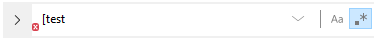
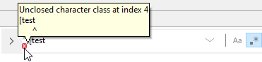
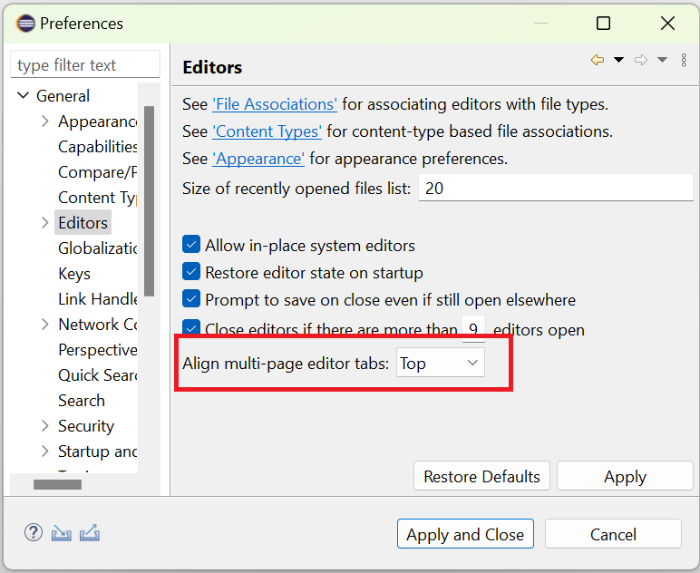
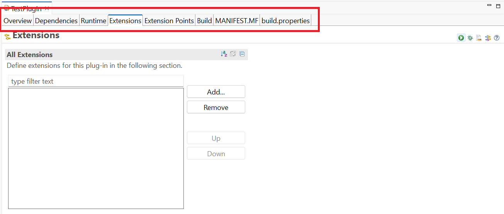
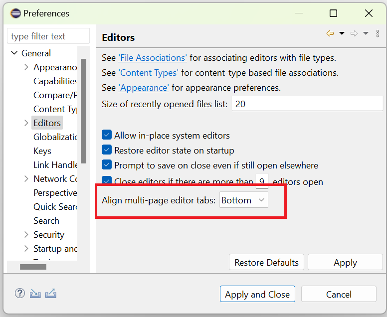
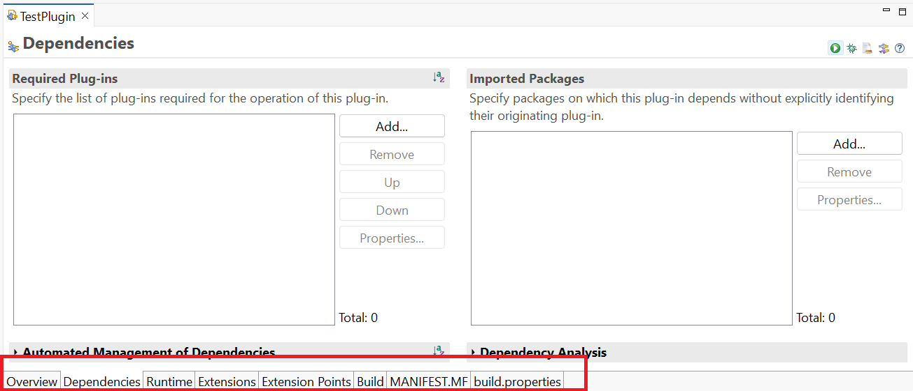
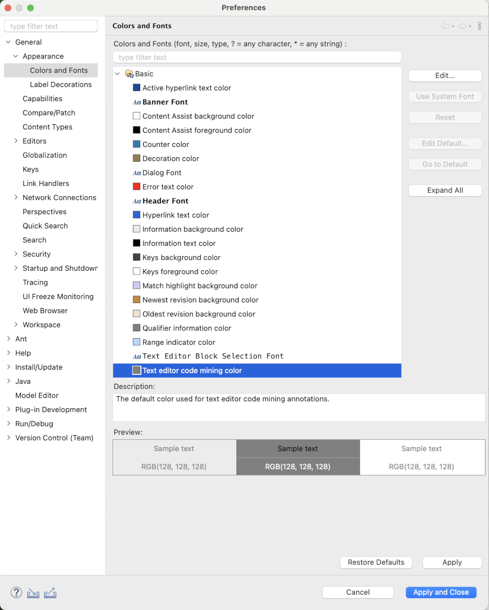
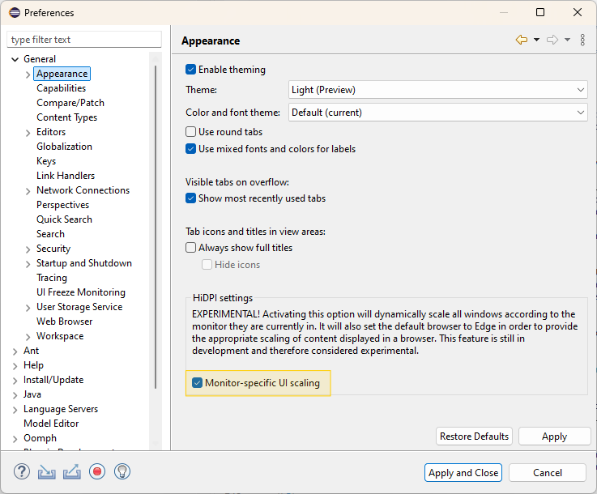

Views, Dialogs and Toolbar
Thanks to this change, searching for a regex just got much better. If a regex which you typed into the searchbar, is not valid, a small decoration will show up and tell you that the expression is invalid.

If you need more information about what exactly went wrong, you can just hover over the red decoration.

And the best part: This feature works the same for the traditional find/replace dialog, the new overlay and the file search dialog.
Text Editors
A new preference has been introduced to customize the alignment of multi-page editor tabs. Users can now select the preferred tab position to enhance usability and better align with individual workflows.
The Align multi-page editor tabs setting in the Editors preference section provides two options:
Top: This option places the tabs at the top of the editor.


Bottom: This option places the tabs at the bottom of the editor. This is the default option.


Preferences
Up to now the color used for rendering Code Minings could not be configured and the same fixed color was used for light and dark theme.
Now it's possible for users to configure the color via the Text editor code mining color on the Colors and Fonts preference page. In addition separte default colors are provided for the light and the dark theme.

General Updates
This update introduces a preference to enable an improved, monitor- and resolution-specific UI scaling on Windows. The feature makes each window adapt its scaling to the monitor it is currently placed on in a sharp, resolution-specific way and without requiring the application to restart. When using multiple windows, each of them will adapt its scaling to the monitor it is placed on. When enabling the feature, it replaces the existing scaling support for high-resolution monitors that is limited to initializing the application's window according to the scaling of the primary monitor at startup and adapting to monitors with other scale values only via blurry scaling or via an application restart.
To enable this feature, check the Monitor-specific UI scaling box on the Appearance preference page (Window > Preferences > General > Appearance), as shown in the image below. In addition to the enhanced UI scaling, this preference also enables the Edge browser as default for an improved browser scaling experience. The feature is still under development, thus marked as experimental and disabled by default. We encourage users to explore this feature and share their feedback to help us improve the functionality.

The functionality can also be used in pure SWT applications.
The images below demonstrate the scaling behavior in an extract of an Eclipse application when moving the window from a primary monitor with 100% scaling to another monitor with 200% scaling, first having the feature disabled and second having it enabled.
With monitor-specific UI rescaling disabled:

With monitor-specific UI rescaling enabled:

In an effort to make it the default browser for Windows, several issues that affected the Edge browser have been addressed in this release. Some of them are:
- Added support for basic authentication
- Let it inherit the proper light/dark theme from Eclipse instead of Windows
- Fixed obscure "No more handles" issues
- Fixed deadlocks that occurred due to the way Edge handles requests
- Fixed some styling issues in the welcome page for Eclipse
- Fixed some issues with JavaScript being used in an empty (local) page
Using Edge
Edge still isn't the default browser but it is mature enough that it can be activated and used already. In order to replace IE with Edge as the browser of choice, you can either:
- Enable the monitor-specific UI scaling (see above) or
- Set the parameter -Dorg.eclipse.swt.browser.DefaultType=edge in your eclipse.ini
We are looking forward to the community using Edge and reporting back any findings via our umbrella issue (#1466)!